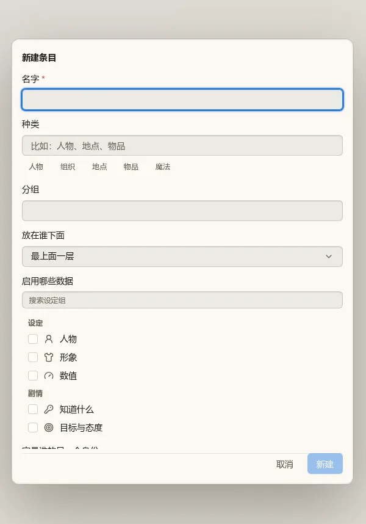
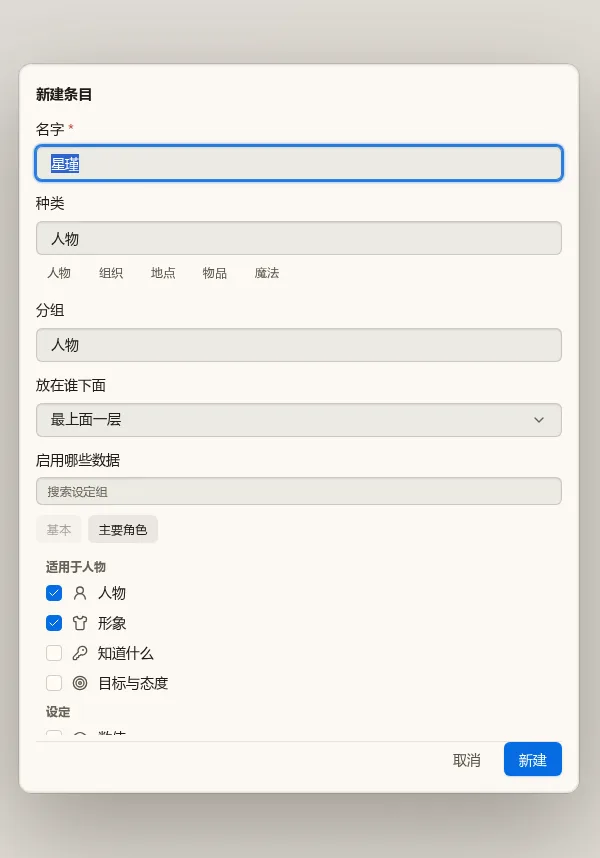

第 1 轮：条目页的页头与新建对话框
页头用哪种排法？
推荐 B 两栏：右边那块空地放上种类与出场，“在看”仍贴着内容；分组与上级已在面包屑里，不再写一遍。
人物有立绘时，页头放一个小头像吗？
推荐放：人物页最先认的是脸；只显示，点了去“形象”分页，不在页头改图。没有立绘、不是人物时那一格不画。
不放
文字分页还没有主文字时，显示什么？
推荐 B 一行淡的占位：空页里最醒目的不该是一颗蓝按钮；整行可点，点了进编辑（阅读与编辑仍然分开）。
A 现在：一句话加“开始写”
新建对话框改成“名字、种类，加两段可展开”吗？
推荐 B：常见的新建只要名字和种类，一屏放得下；收起的两段在段头写出现在的值，本体与上级挨着，选了本体上级写明跟着它。
A 现在


对话框的字段名按下表改？
推荐同意：名词对名词，和设定树、页头的叫法一致。
| 现在 | 改成 |
|---|---|
| 启用哪些数据 | 设定组（收起时写“人物、形象”） |
| 放在谁下面 ／ 最上面一层 | 上级条目 ／ 无 |
| 它是谁的另一个身份 ／ 不是 | 是谁的马甲 ／ 不是马甲 |
| 从哪里出场 | 出场（选项仍是“一开始就在”“第 N 章开头”） |
| 标题“新建条目” | 从“新建人物”打开时写“新建人物” |
直接修，不用答
| 哪里 | 改成什么 |
|---|---|
| 对话框：种类的候选 | 做成看得出能点的按钮，选中的用强调色浅底 |
| 对话框：分组、本体、上级、出场 | 能打字搜的下拉（条目、章节多了也找得到） |
| 对话框：动过勾选以后 | 勾选和种类的默认不同时出“恢复某某的默认”，原来是悄悄不再跟着种类换 |
| 对话框：名字框里按回车 | 直接新建 |
| 在设定树选中的条目或分组上新建 | 上级、分组预先填好 |
| 页头的“添加别名” | 加号与上面的名字左对齐（现在缩进了一格） |
不采纳
| Gemini 的建议 | 理由 |
|---|---|
| 页头右栏写分组与上级 | 编辑区顶上的面包屑已经写着 |
| “在看”挪到名字那一行 | w00039 t42 定在贴着内容的那一行 |
| 勾选列表排两列、去掉搜索框 | 列表和“添加一组设定”对话框共用，设定组多起来要搜 |
| 对话框加“连续新建” | 等真有成批新建的需要再加 |
| 人物卡的空值“填写”换成横线 | w00039 t41 定的“填写”；人物分页以后改成设定组模板 |
已定
- 界面与讨论里叫“设定组”；设定组分页里可改的文字叫“设定组模板”，另做（2026-11-27）